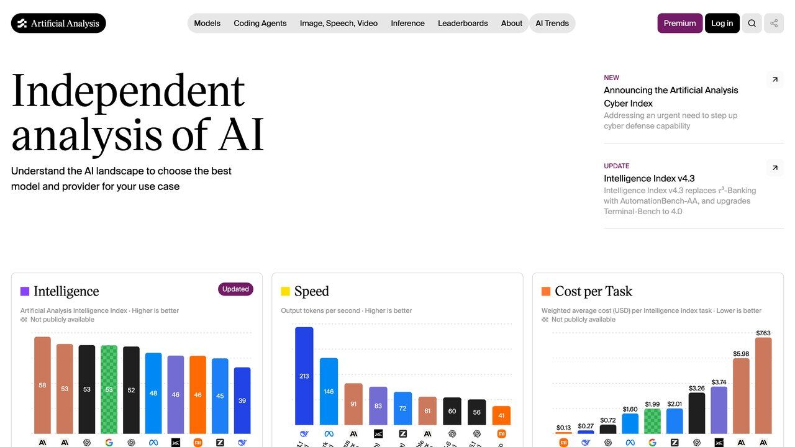
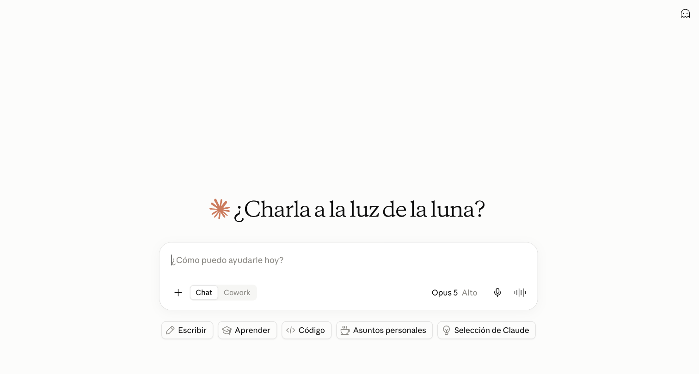
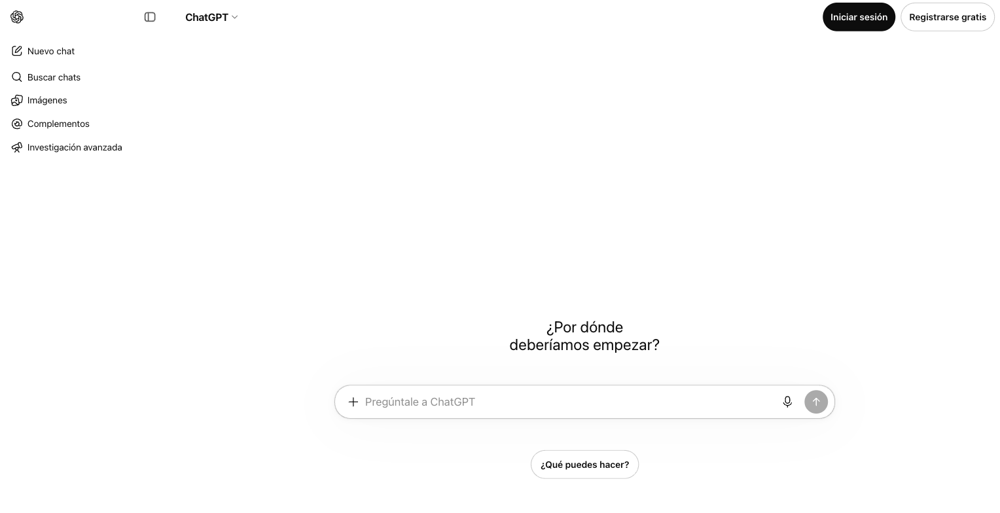
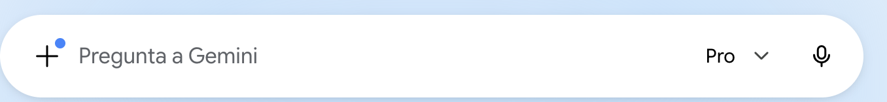
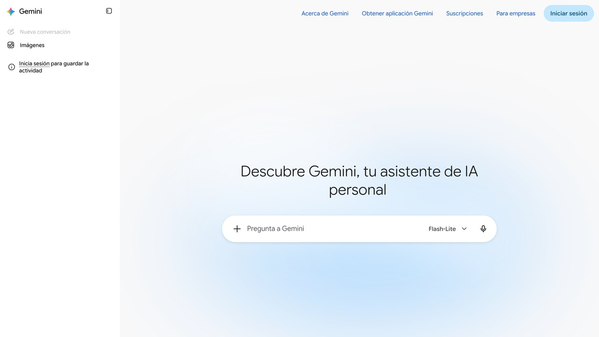

Las tablas de clasificación públicas (los leaderboards académicos) se han convertido en el equivalente moderno de las cifras de consumo homologadas de los fabricantes de coches: medibles en condiciones de laboratorio, pero desconectadas de la fricción de un uso real. Cuando una llamada falla a las dos de la madrugada no importa la puntuación en un test de opción múltiple; importa si el modelo inventó una bandera que no existe en tu CLI o truncó un JSON que necesitabas completo.
Esta comparativa no busca coronar un ganador único, porque no lo hay: los tres laboratorios compiten actualizando sus modelos cada pocos meses, y la "mejor" opción cambia según la tarea concreta, no según quién publicó el último anuncio. Lo que sí se mantiene razonablemente estable entre versiones son los rasgos de carácter de cada familia — cómo prefiere seguir instrucciones, cómo maneja la ambigüedad, para qué se optimizó su ecosistema — y es ahí donde se apoya el resto de esta guía.
Veredicto rápido
Fuerte en ingeniería de software, en seguir instrucciones complejas al pie de la letra y en ejecución en terminal (Claude Code). Buen respeto de esquemas JSON estrictos.
Buen razonamiento matemático con los modelos de "pensamiento" (o-series), el ecosistema de consumo más maduro, voz natural y muchos conectores.
La ventana de contexto más grande del mercado. La opción cuando necesitas volcar un repositorio entero, un documento de cientos de páginas o vídeo largo sin trocear.
1. Claude: precisión en código y arquitectura agéntica
En trabajo sobre bases de código existentes, Claude suele mostrar buena "humildad contextual": cuando una especificación es ambigua o una ruta no encaja con el árbol del proyecto, tiende a pedir aclaración en vez de inventar un método auxiliar imaginario. Esto lo hace especialmente adecuado para herramientas de terminal como Claude Code y para flujos que consumen MCP, donde un cambio de formato inesperado puede romper un pipeline entero.

Cuándo elegir Claude:
- Refactorizaciones donde romper tipos cuesta horas de depuración.
- Respuestas con esquemas JSON muy tipados, sin texto extra alrededor.
- Trabajo directo en terminal o con servidores MCP.
Esta misma tendencia a pedir aclaración en vez de rellenar el hueco con una suposición se nota fuera del código: en tareas de redacción con instrucciones muy específicas de formato (una plantilla legal, un documento con una estructura exacta que hay que respetar), Claude tiende a seguir la instrucción literal en vez de "mejorarla" por su cuenta con cambios no pedidos, lo cual es justo lo que se necesita cuando el formato de salida lo dicta un sistema externo que no admite variaciones.
2. ChatGPT: razonamiento y versatilidad de consumo
Los modelos con cómputo de razonamiento en tiempo de inferencia (la serie o) dedican ciclos a deliberar y ramificar hipótesis antes de responder, lo que ayuda en problemas de lógica formal, optimización o depuración de algoritmos complejos, a cambio de más tiempo de espera. El modelo de propósito general (GPT-4o y similares) es el más veloz y multimodal, con el ecosistema de conectores más amplio.
En tareas de código continuado, es habitual que estos modelos añadan comentarios no solicitados o acorten fragmentos con marcadores tipo // resto de tu lógica aquí, lo que puede romper diffs limpios en Git si no revisas el resultado.

Cuándo elegir ChatGPT:
- Problemas de lógica o matemáticas con varios pasos encadenados.
- Uso diario general: correo, borradores, dudas rápidas, voz en el móvil.
- Cuando necesitas conectar la IA con muchas apps distintas (calendario, correo, terceros) sin montar nada tú mismo.
El otro punto fuerte real de ChatGPT es la memoria entre conversaciones: por defecto recuerda detalles de conversaciones anteriores (tu profesión, proyectos recurrentes, preferencias de formato) sin que tengas que repetirlos cada vez, algo que Claude y Gemini ofrecen de forma más limitada o con más pasos manuales de configuración. Es un punto a favor claro para uso personal continuado, y un punto a vigilar si compartes el dispositivo o trabajas con datos sensibles que preferirías que no se recordaran automáticamente.
3. Gemini: la ventaja de la ventana de contexto
Durante años la industria rodeó el coste del contexto masivo con arquitecturas RAG: trocear texto, generar embeddings y buscar por similitud. Gemini ofrece ventanas de contexto muy superiores a las de sus competidores de forma estándar, lo que permite volcar documentos larguísimos o vídeo extenso sin ese trabajo previo de troceado.
Si tu flujo implica auditar un documento de cientos de páginas, transcribir horas de audio o cargar la documentación completa de un sistema en un único prompt, es la opción con menos fricción técnica.

Cuándo elegir Gemini:
- Auditar documentos muy largos sin trocearlos manualmente antes.
- Analizar vídeo o audio extenso de forma directa.
- Integración nativa con Google Workspace (Docs, Sheets, Gmail) sin salir del entorno.
Una ventana de contexto grande no es garantía de que el modelo use bien todo lo que le cabe: en pruebas independientes de "recuperación en contexto largo" (encontrar un dato concreto escondido en medio de un documento enorme), el rendimiento de cualquier modelo tiende a bajar cuanto más lejos del principio o del final del documento esté el dato buscado. En la práctica, esto significa que para documentos verdaderamente extensos sigue ayudando decirle explícitamente en qué sección buscar, en vez de asumir que "cabe todo" equivale a "lo procesa todo con igual atención".
Y si lo que necesitas es imagen, vídeo o voz
Fuera de texto y código, las diferencias también son claras. Gemini nació pensado para ser multimodal desde el diseño, así que suele ir por delante entendiendo vídeo y audio de forma nativa, no solo imágenes sueltas. El modo de voz de ChatGPT es, para la mayoría de usuarios, el que suena más natural en una conversación hablada en tiempo real. Claude entiende bien imágenes que le subas (capturas, diagramas, fotos de documentos) pero no genera imágenes ni tiene un modo de voz conversacional propio. Si tu tarea es sobre todo visual o de audio, merece la pena probar Gemini antes que forzarlo con los otros dos.
Para generación de imágenes concretamente, la comparación cambia con cada actualización de modelo de los tres laboratorios, así que cualquier afirmación tajante sobre "cuál genera mejores imágenes" tiene fecha de caducidad corta. Lo más estable no es el ranking de calidad, sino la diferencia de enfoque: unos priorizan fotorrealismo, otros priorizan seguir con precisión instrucciones de composición y texto dentro de la imagen. Si el texto legible dentro de la imagen (un cartel, un logo, una etiqueta) es importante para tu caso, pruébalo explícitamente antes de asumir que cualquier generador lo hace bien, porque sigue siendo uno de los puntos donde más varía la calidad entre modelos.

Casos donde la elección importa menos de lo que parece
Toda esta comparativa se centra en las diferencias, pero merece la pena decir también dónde esas diferencias casi no se notan: para preguntas generales de conocimiento, resúmenes cortos, traducción de textos comunes o redacción de un correo estándar, los tres modelos de gama alta actuales dan resultados de calidad muy similar en la práctica. Si tu uso diario es sobre todo de este tipo, la decisión razonable es elegir según el precio, el ecosistema donde ya trabajas (Google Workspace, Microsoft 365) o la interfaz que te resulte más cómoda, no una supuesta ventaja de calidad que en esas tareas concretas apenas existe.
Donde sí conviene invertir tiempo en elegir con cuidado es en el extremo contrario: tareas especializadas, de alto volumen repetido, o donde un error tiene coste real (código en producción, análisis financiero, documentos legales). Ahí la diferencia entre el modelo adecuado y el genérico se nota de forma acumulada, aunque en una sola respuesta aislada pueda no ser obvia.
Un ejercicio práctico para decidir cuánto peso darle a esta comparativa en tu caso: durante una semana normal de trabajo, anota qué tipo de tarea le pides a la IA con más frecuencia. Si la lista está dominada por un solo tipo de tarea (código, documentos largos, conversación general), la elección se simplifica mucho: adopta el modelo especializado en eso como principal y usa los otros dos solo de forma puntual cuando aparezca una tarea claramente fuera de ese perfil.
Cómo pensar en el precio más allá de la tarifa mensual
Comparar solo el precio del plan mensual de consumo (típicamente en un rango similar entre los tres, alrededor de 20 dólares al mes en el nivel "Plus/Pro" de entrada) esconde la diferencia real de coste, que aparece cuando usas la API directamente para automatizar algo en vez de usar la app de chat. Ahí se paga por token procesado, y el precio varía según el modelo elegido dentro de cada familia (los modelos más "ligeros" y rápidos de cada laboratorio cuestan una fracción de los modelos de gama alta). Para un uso ocasional la diferencia es insignificante; para una automatización que procesa miles de solicitudes al mes, elegir el modelo más barato que cumple el umbral de calidad necesario puede suponer una diferencia de coste considerable a fin de mes.
Otro coste que se suele pasar por alto es el de cambiar de herramienta una vez que ya tienes prompts, proyectos o automatizaciones construidas sobre una de ellas. Migrar una integración completa de una API a otra no es solo cambiar una clave de acceso: los tres formatean las peticiones de forma distinta y no siempre responden igual a un prompt que funcionaba bien en el anterior. Merece la pena tenerlo en cuenta antes de construir algo grande sobre cualquiera de los tres: no es una decisión completamente reversible sin coste.
Una forma de mitigar ese riesgo de bloqueo con un proveedor es escribir la lógica de tu automatización de forma que el modelo concreto sea un parámetro fácil de cambiar, no una decisión incrustada en decenas de sitios del código. Herramientas de automatización como n8n o Make (cubiertas en la guía de esta web sobre automatizar tareas con agentes) suelen facilitar este desacoplamiento al tratar la llamada al modelo como un nodo intercambiable dentro del flujo, en vez de código escrito a mano contra la API de un proveedor específico.
Gemini gratis cambia el 9 de octubre de 2026: qué pierdes y qué alternativas tienes
Google ha avisado de que, con una cuenta personal, los modelos que puedes elegir en la aplicación de Gemini van a cambiar. Para quien no tiene ninguna suscripción de Google AI, el cambio empieza el 9 de octubre: a partir de ese día solo podrá usar Flash-Lite, el modelo más pequeño de la familia. Dejan de estar disponibles Flash y Pro. Si pagas el plan AI Plus, conservas Flash-Lite y Flash pero pierdes Pro, y Google te escribirá un correo con la fecha exacta en la que te afecta. AI Pro y AI Ultra mantienen los tres modelos.
Lo que Google ha publicado es un cambio de modelos, no un número nuevo de mensajes: desde mayo, los límites de Gemini se calculan según el tamaño de tus preguntas, las funciones que uses y la longitud de la conversación, y se renuevan cada cinco horas. Cada modelo permite elegir esfuerzo bajo, medio o alto, y los esfuerzos más altos gastan más de tu límite.
Fuente oficial: Ayuda de Gemini Apps: «Changes to Gemini model access and limits» ↗
Qué puedes hacer
- Quedarte en Gemini gratis. Flash-Lite sirve para preguntas cortas, resúmenes y traducciones. Donde más se nota la bajada es en razonamiento largo, programación y análisis de documentos extensos.
- Probar ChatGPT gratis. Tiene plan gratuito, con límites de uso y con el modelo principal limitado. Planes y límites en la página oficial ↗
- Probar Claude gratis. También tiene plan gratuito, con un límite que se renueva por sesiones y que Anthropic no fija en un número de mensajes. Planes y límites en la página oficial ↗
- Pagar solo si lo necesitas a diario. Si trabajas con Gemini todos los días, AI Pro es el plan que mantiene Pro. Si lo usas de vez en cuando, no compensa.
Los límites de los tres planes gratuitos cambian con frecuencia y varían según la demanda, así que no te damos aquí un número de mensajes: comprueba la página oficial el día que vayas a usarlos. Para decidir cuál encaja con tu trabajo, la comparativa de esta guía te ayuda a elegir según la tarea y no según el precio.
Preguntas frecuentes
«No busques el modelo "mejor" en abstracto: busca el modelo cuya tasa de fallo toleres en el problema concreto que intentas resolver hoy.»
4. Matriz comparativa orientativa
Los precios y ventanas de contexto de estos modelos cambian con frecuencia: consulta siempre la página oficial de precios del proveedor antes de decidir, esta tabla es solo orientativa a nivel de orden de magnitud.
| Dimensión | Claude | ChatGPT | Gemini |
|---|---|---|---|
| Punto fuerte principal | Código y agentes de terminal | Razonamiento y ecosistema | Ventana de contexto |
| Ventana de contexto | Cientos de miles de tokens | Cientos de miles de tokens | Millones de tokens |
| Modelo de precios | Por token de entrada/salida | Por token, con planes de suscripción | Por token, con capa gratuita amplia |
| Integración nativa | Terminal / CLI / MCP | Apps de escritorio y móvil, conectores | Google Workspace |
| Modo voz en directo | No | Sí, el más maduro | Sí |
Cómo migrar un prompt de uno a otro sin perder calidad
Un prompt que funciona bien en uno de los tres no siempre da el mismo resultado al copiarlo tal cual en otro, y la razón no es que uno sea "peor", sino que cada familia interpreta ligeramente distinto las mismas convenciones de formato. Claude tiende a responder de forma muy literal a instrucciones formateadas con etiquetas de tipo XML (explicado en detalle en la guía de esta web sobre cómo escribir prompts), mientras que ChatGPT y Gemini funcionan igual de bien con Markdown estructurado (títulos, listas) sin necesitar ese formato adicional.
La recomendación práctica al migrar un prompt importante de una plataforma a otra es no asumir que funcionará igual de bien sin ajuste: pruébalo primero con un caso real de tu tarea, compara el resultado con el que ya tenías, y ajusta el formato o el nivel de detalle del contexto según lo que pida cada modelo, en vez de dar por hecho que "un buen prompt es un buen prompt en cualquier sitio".
Los pilares básicos de un buen prompt (rol, contexto, ejemplos, formato de salida) sí se mantienen válidos en los tres, porque responden a cómo funciona un modelo de lenguaje en general, no a la implementación concreta de un laboratorio. Lo que cambia entre plataformas es el "envoltorio" — la sintaxis exacta y el nivel de detalle que cada una necesita para rendir al máximo —, no el principio de fondo. Si dominas esos pilares, migrar entre los tres se convierte en un ajuste menor de formato, no en volver a aprender desde cero.
Guarda una copia de tus prompts más usados por familia de modelo, con el ajuste ya aplicado, en vez de reconstruirlo de memoria cada vez que cambies de herramienta — ese pequeño archivo de referencia ahorra el tiempo de reajuste en cada migración futura.
Actualización: ¿y GPT-6 Astra, supera a Claude Fable 5.1?
OpenAI lanzó GPT-6 Astra el 3 de septiembre de 2026 acompañado de una tanda de benchmarks propios que, según su comparativa, sitúan al modelo por delante del mejor modelo de Anthropic disponible en ese momento, Claude Fable 5.1: 97,6% frente a 87,8% en FrontierMath Tier 4 (problemas matemáticos de investigación), 41,4% frente a 31,4% en AutomationBench (tareas de automatización de varios pasos) y 95,9% frente a 84,3% en BenchCAD (diseño e ingeniería asistida). En ExploitBench (encontrar y explotar vulnerabilidades de seguridad en un entorno controlado), Astra marcó 100% frente al 70% de Claude Opus 5.
Por qué conviene leer estas cifras con cautela:
- Son benchmarks autopublicados por OpenAI el día del lanzamiento, no una evaluación independiente de terceros — el laboratorio que fabrica el modelo elige qué pruebas mostrar y cómo las presenta.
- La propia comparativa de OpenAI reconoce que Astra queda por detrás en al menos una prueba que no destacó en su propio anuncio, lo cual es una señal de que el cuadro completo es más matizado que el titular "GPT-6 gana".
- Ganar un benchmark de matemáticas de investigación o de explotación de vulnerabilidades en un entorno controlado no se traduce automáticamente en mejor rendimiento en tu tarea concreta de código, redacción o automatización diaria.
El patrón se repite con cada lanzamiento grande de cualquiera de los tres laboratorios: un anuncio con benchmarks propios que muestran una ventaja clara, seguido semanas después por evaluaciones independientes que matizan esa ventaja en tareas reales, fuera del entorno controlado del benchmark. En esta web no aceptamos pagos de ningún laboratorio y no vamos a coronar un ganador el mismo día del anuncio basándonos solo en la cifra que el propio fabricante decidió publicar. Si tu decisión depende de esta comparativa concreta, la recomendación sigue siendo la misma que para el resto de esta guía: prueba ambos modelos con tu tarea real antes de migrar nada, y espera a que aparezcan evaluaciones independientes antes de tratar cualquier benchmark de lanzamiento como la última palabra.
¿Qué estás intentando construir ahora mismo?
Claude, vía Claude Code o su API
Buena opción para trabajo en terminal con esquemas JSON estrictos.
Redacción El Telar
No aceptamos patrocinios de los laboratorios que fabrican estos modelos, para mantener la comparativa neutral.
Esta comparativa se revisa periódicamente a medida que cada laboratorio publica actualizaciones relevantes de sus modelos. Si notas que una afirmación concreta de esta guía ya no se corresponde con la versión actual de alguna de las tres herramientas, contrástalo siempre con la documentación oficial del proveedor antes de tomar una decisión importante basada solo en este texto.